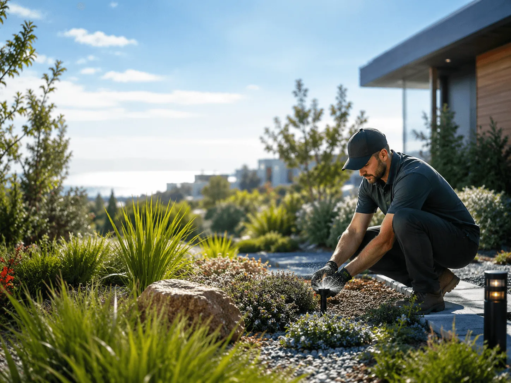
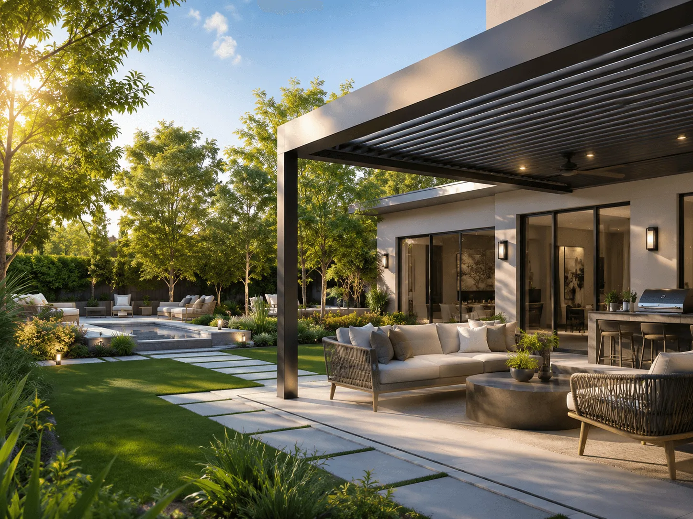
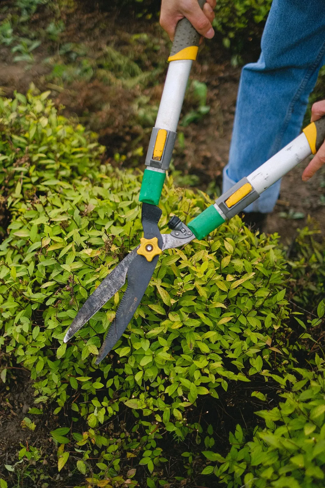
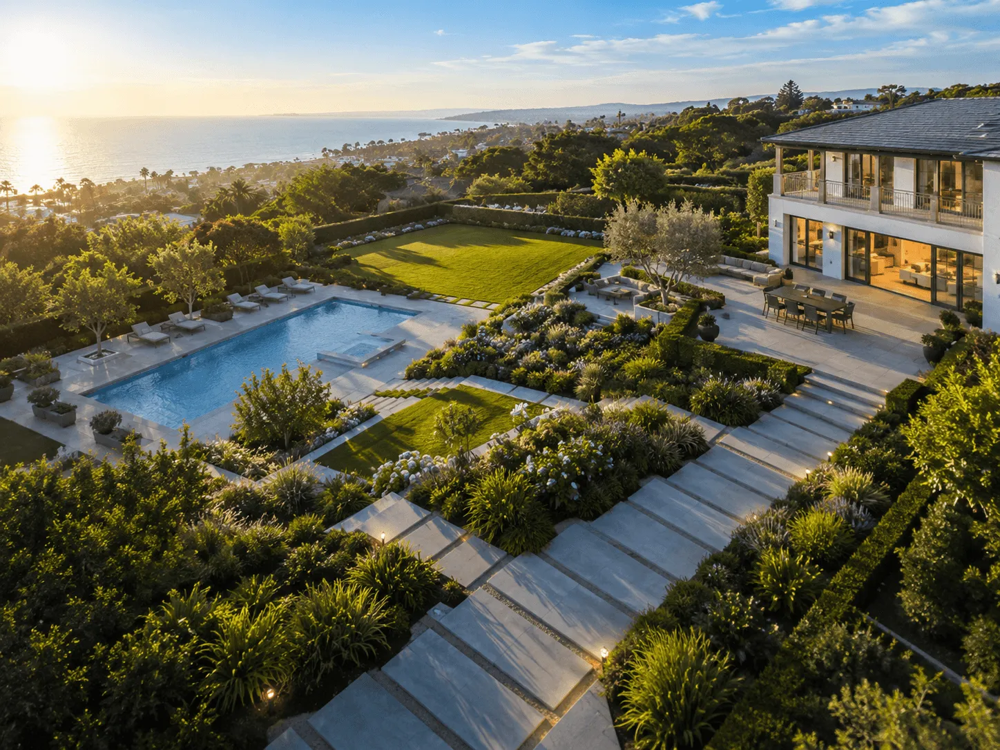
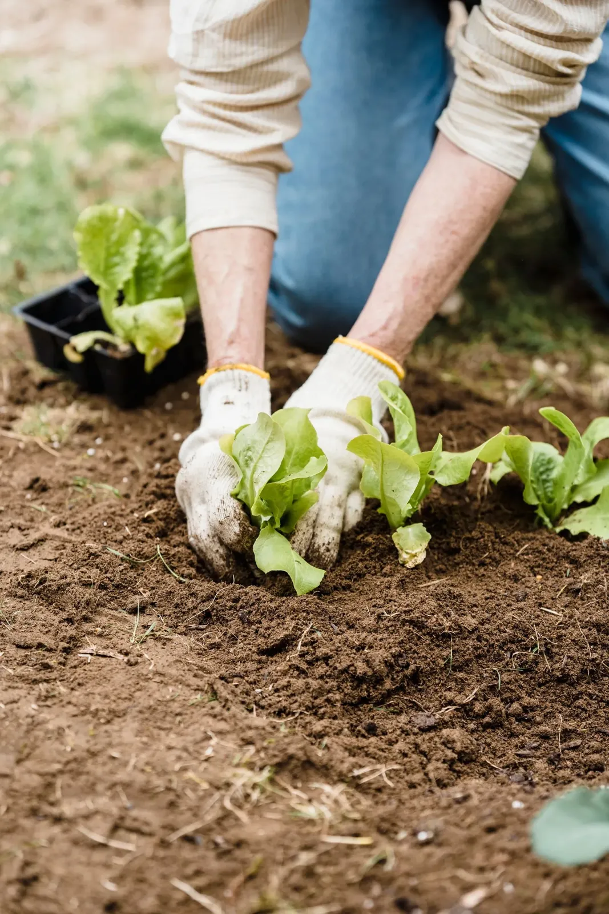
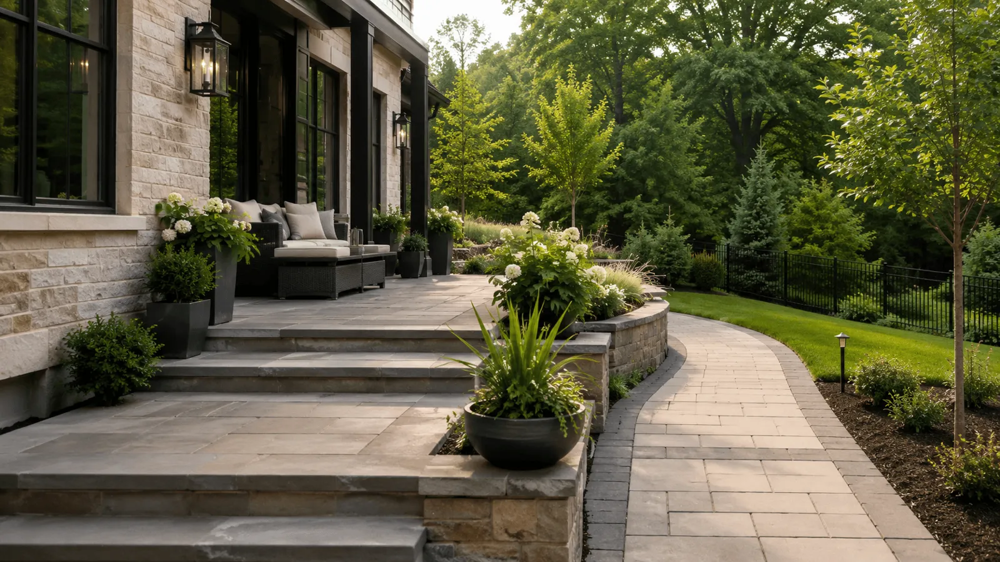
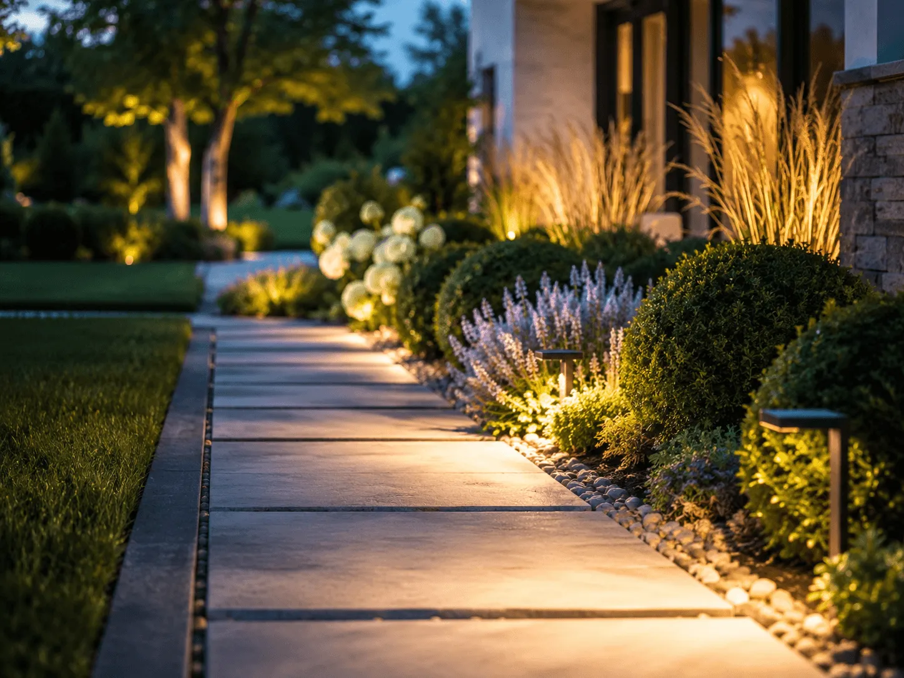
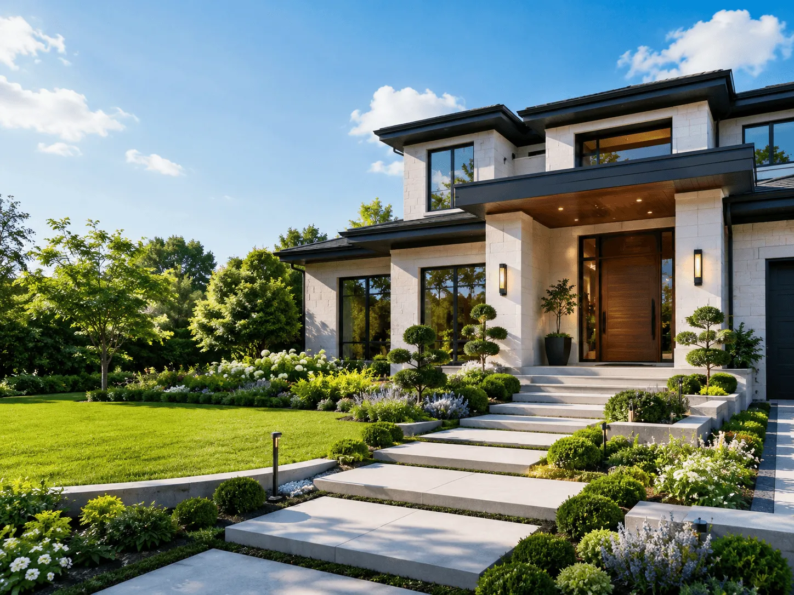
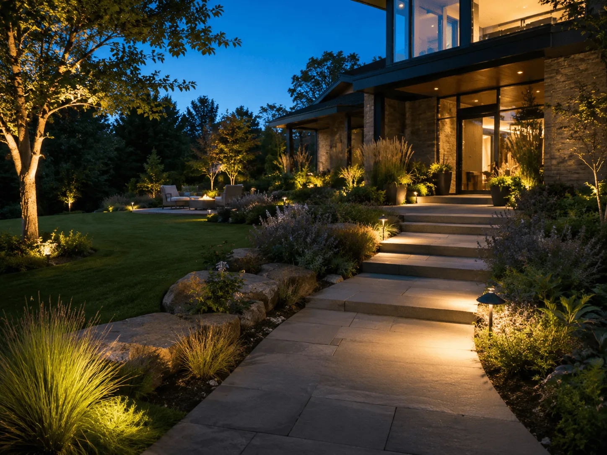

01
Design
Trädgårdsarkitektur och gestaltning av utemiljöer. Vi utgår från platsen, hur ni använder den och vad den tål – och tar fram ritningar och bygglovshandlingar när det behövs.
Från ritning och bygglovshandlingar till naturstensmurar, altaner och löpande skötsel – vi gestaltar, bygger och tar hand om hållbara trädgårdar i Ale och Västra Götaland.
från första skiss till färdig trädgård
En trädgård blir sällan bra av en ritning ensam, och inte heller av ett bygge som saknar plan. Hos oss hänger det ihop.
Spirera skapar hållbara och levande utemiljöer. Vi tar fram gestaltningen och ritningarna, bygger murar, altaner och planteringar – och sköter sedan om det som har anlagts, så att trädgården blir bättre för varje år i stället för tvärtom.
Vi utgår från Nödinge i Ale kommun och arbetar i hela Västra Götaland. Företaget leds av Ann Linéa Hellberg.
Så arbetar vi
Trädgårdsarkitektur och gestaltning av utemiljöer. Vi utgår från platsen, hur ni använder den och vad den tål – och tar fram ritningar och bygglovshandlingar när det behövs.

Snickeri och markarbete i samma projekt: altaner, staket, naturstensmurar, gångar och planteringar.

Underhåll av grönytor och trädgårdar, som återkommande avtal eller vid enstaka tillfällen.

Projektering och projektledning av utemiljöer. Passar när ni redan har en idé eller en entreprenör – men behöver någon som håller ihop helheten, tidplanen och kvaliteten.

Vi går runt på plats och pratar om hur ytan används idag, vad som fungerar och vad ni saknar.
Ni får ett gestaltningsförslag med material, växtval och en tydlig kostnadsbild. Vid behov tar vi fram bygglovshandlingar.
Vi bygger det vi har ritat – snickeri, sten och plantering – och håller er uppdaterade under arbetet.
En ny trädgård behöver omsorg de första åren. Vi kan ta över skötseln så att den växer in som det var tänkt.
Ny trädgård, en altan som ska byggas om eller en tomt som behöver en plan. Vi hjälper er hela vägen eller med en del av den.
Gårdar och gemensamma ytor som ska fungera för många. Gestaltning, upprustning och skötsel som styrelsen kan planera och budgetera för.
Entréer, innergårdar och grönytor kring fastigheten. Projektering, projektledning och löpande underhåll.




Berätta kort vad ni har och vad ni vill – så hör vi av oss och bokar ett första samtal.
Skriv några rader om platsen och vad ni funderar på.